2 How to do the analysis in R
2.1 Data importation and filtering
- Begin by making a folder on your D: drive (if you are working in a university computer lab), or on your Desktop (if you are working on your own computer), where you will work on this assignment.

Note in the above example, I am working on my own laptop, so I have made the file on my Desktop, but if you are working on a lab computer you need to make the folder on the D: drive.
Visit World Database on Protected Areas and download the
.csvfile for protected areas in the country you are studying. Save the.csvfile to the folder you made on the D: drive (or your Desktop). You may rename the.csvfile you downloaded if the preset name is complicated. I changed the file name toecuador.csv.Open R Studio and save a new R Script. In the top menu select
File > New File > R Script, thenFile > Save As. Save the.R(the R Script) to the folder you made on your D: drive (or Desktop):
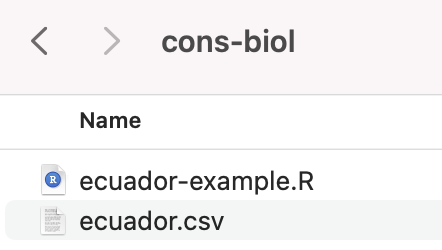
It is helpful to save both these files in the same folder.
- First we will load your data:
data1 <- read.csv(file = "ecuador.csv")The above command is essential to your analysis so you should add it to your R Script. Your R Script should look something like this:
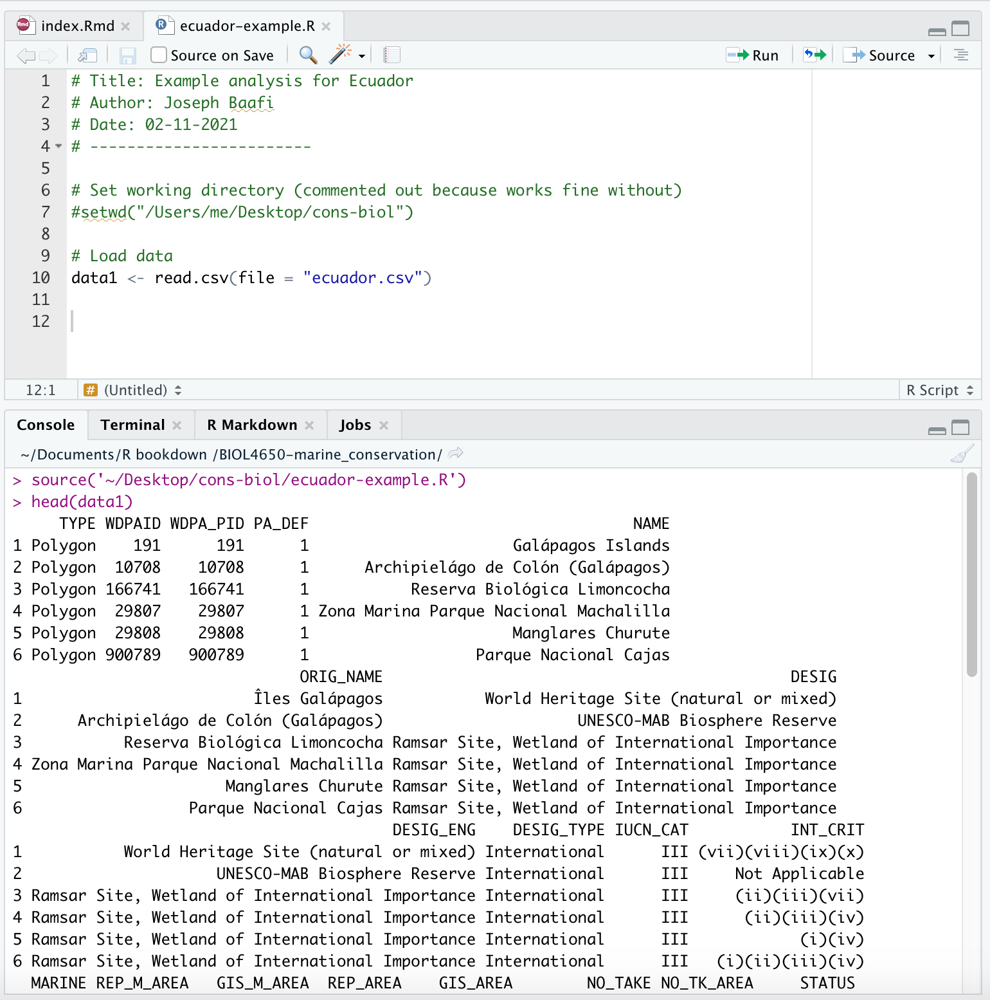
However, you will not have selected Ecuador as your country, so your script will look slightly different (the data for Ecuador are unuseable for this exercise, so the dataset ecuador.csv is example data that are made up).
- In the above screenshot, you can see that I have queried
head(data1)in my Console. This was to check that my data had loaded. Steps that are essential to an analysis, I add to my R Script in the Source pane, in the order that I want them to run in. When I want to check something, then I do this in my Console. You want to use the Console like scratch paper, and the R Script as your final work. See Finding your way around R Studio for an explanation of where the Source and Console panes are.
Generally, my workflow is to try commands in the Console. If the commands work as I planned, then I add them to my R Script. After having added a few commands I will run my R Script to check that all the commands are working together properly. To run my R Script, I click the Source button, select ‘Code > Source’ from the top menu, or type ‘source(’~/Desktop/cons-biol/ecuador-example.R’)’ in my Console (you will need to replace the code to the left with your own file names and the directory path for your computer). I will ‘Source’ my code every few lines that I add to my R Script, and I will perform tests in the Console to make sure everything is working.
- If your data has not loaded, the most likely problem is a spelling error or problems with specifying the path to
ecuador.csv. You might try:
the RStudio way of importing your data, or
moving
ecuador.csvto your working directory. To find out your working directory typegetwd()into your Console:
getwd()## [1] "/Users/ahurford/Desktop/BIOL4650-marine_conservation"Searching your computer for
ecuador.csvto make sure it is saved in correct place, and moving it as needed (it is easiest if the folder you are working in is on your computer Desktop).Opening
ecuador.csvin Excel or Numbers to check that your data download was successful. (if you do this make sure your still save the file as a.csvnot.xlsxor other format).
After loading the data, read through the metadata file that is downloaded as a pdf file along with the
.csvfile to better understand the data and what you would like to plot.Please note the correct way to cite your data:
UNEP-WCMC and IUCN (2021), Protected Planet: The World Database on Protected Areas (WDPA) and World Database on Other Effective Area-based Conservation Measures (WD-OECM) [Online], October 2021, Cambridge, UK: UNEP-WCMC and IUCN. Available at: www.protectedplanet.net.
- You will want to do some exploration of your data. To recover the names of the columns of the data:
names(data1)## [1] "TYPE" "WDPAID" "WDPA_PID" "PA_DEF" "NAME"
## [6] "ORIG_NAME" "DESIG" "DESIG_ENG" "DESIG_TYPE" "IUCN_CAT"
## [11] "INT_CRIT" "MARINE" "REP_M_AREA" "GIS_M_AREA" "REP_AREA"
## [16] "GIS_AREA" "NO_TAKE" "NO_TK_AREA" "STATUS" "STATUS_YR"
## [21] "GOV_TYPE" "OWN_TYPE" "MANG_AUTH" "MANG_PLAN" "VERIF"
## [26] "METADATAID" "SUB_LOC" "PARENT_ISO3" "ISO3" "SUPP_INFO"
## [31] "CONS_OBJ"Note that names(data1) is a good command to run in the Console because we want to know the column names so that we can extract the correct column later: names(data1) would be run in the Console because it is a query rather than an essential part of the analysis.
- Now we will extract the
MARINEcolumn. Try this in your Console (as this is just a test):
data1$MARINEYou need to write the column name exactly as it appears in the output of names(data1) or R will produce an error. Remember MARINE is capitalized in the data frame so be careful not to type Marine, which will come out as an error.
- We want to filter the data to separate protected areas identified as exclusively terrestrial from those that include marine areas. The new data created will be saved as
data2. Let’s run this code in theConsole:
data2 <- data1[data1$MARINE != 0,]In the MARINE column 0 indicates that a site is not marine. The new variable data2 now contains all the rows for the marine sites because !=0 means the value is not 0, and so therefore the site is marine (a double negative!).
The square brackets are used to access elements of the data frame where data[5,7] will select the 5th row and the 7th column of the variable data. Note that data[5,] will select the 5th row and all the columns, and data[,7] will select the 7th column and all the rows. Rows ascend by 1 moving down vertically, while columns ascend by 1 when moving to the right.
Check your output (in your Console). In particular, look at the MARINE column.
data2$MARINEAre there any 0s left in the MARINE column? No? Good, because we want the marine sites, so we do not want any 0s in the MARINE column. Now we have found a line of code that works for our analysis so we add it to our R Script:
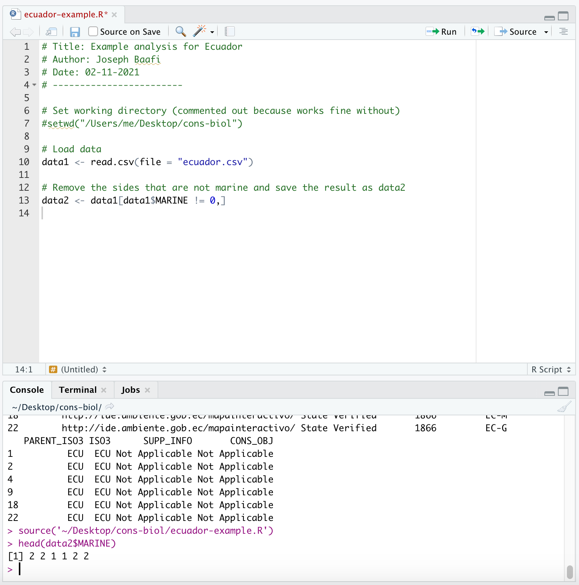
In the above screen shot you can see that after I source my full R Script, I check to see that I have filtered out the sites that are not marine. If your country doesn’t include any marine sites, you will need to choose another country.
Note that data1$MARINE == 1 will return TRUE for all the rows of data1 where the entry in the MARINE column is 1. To retain just these rows you would need: new.data <- data1$MARINE[data1$MARINE == 1,]
- We want to compute the average size of coastal MPAs for the example Ecuador data. Unfortunately, some of the MPAs have
NAinstead of a reported size in theGIS_M_AREAcolumn:
which(is.na(data2$GIS_M_AREA)=="TRUE")## [1] 21 22The result output above states that rows 21 and 22 have NA in the GIS_AREA column of data2. You can verify this by typing the following in the Console:
data2$GIS_M_AREA[21]## [1] NA- Yes, indeed, row 21 of
data2$GIS_M_AREAisNA. We will need to remove theNAs. If you are lucky and have noNAs in your data, you can skip this step (instead just adddata3 <- data2to your R Script). The following command (entered into the Console) tells us how manyNAs, we have in theGIS_M_AREAcolumn ofdata2:
length(which(is.na(data2$GIS_M_AREA)=="TRUE"))## [1] 2I have 2 (note that the length() command reports the length of a vector). We can remove the NAs as follows:
data3 <- data2[is.na(data2$GIS_M_AREA)=="FALSE",]- Again, with is a double negative: we ask if the row is
NA, and if the answer isFALSE(not anNA) we keep the row indata3.
Let’s check that we effectively removed the NAs from the data:
head(which(is.na(data3$GIS_M_AREA)=="TRUE"))
length(which(is.na(data3$GIS_M_AREA)=="TRUE"))Now we see that data3 is a cleaned up version of data2 that no longer contains the the NA values in the GIS_M_AREA column. We know this because when we use length() to find out how many of the values in data3$GIS_M_AREA are NA, the returned value is 0.
- The line of code that makes
data3is an essential step in the analysis so you will want to add it as the next line of code in your R Script:
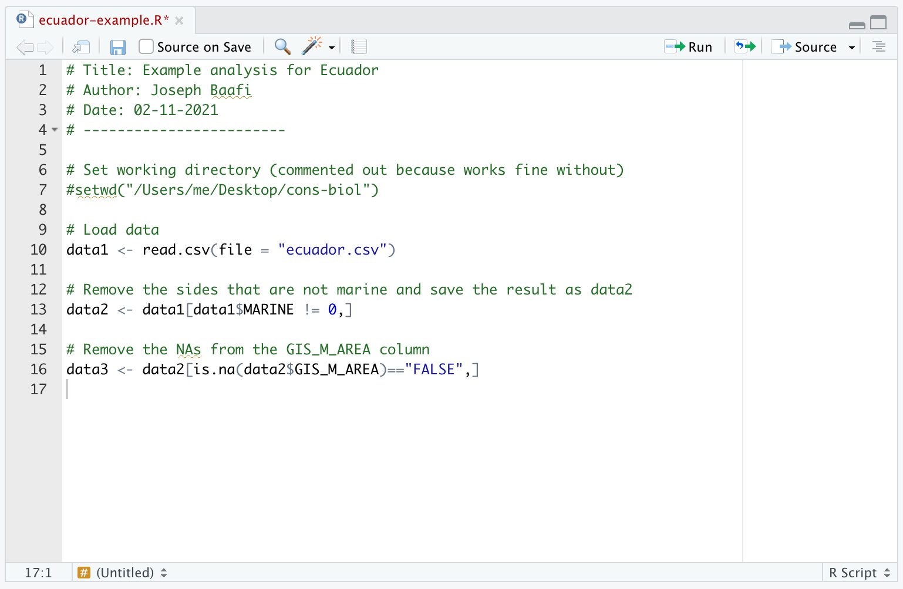
- We can now calculate the mean and median sizes of the coastal MPAs. Let’s run this code in your Console:
mean.area <- mean(data3$GIS_M_AREA)
median.area <- median(data3$GIS_M_AREA)
print(paste0("Mean of MPAs (km2): ", mean.area))
print(paste0("Median of MPAs (km2): ", median.area))(Note mean(data2$GIS_M_AREA) returns NA due to the NAs having not been removed in the data frame data2)
The lines of code that calculate the mean and median are essential in the analysis so you will want to add them as the next lines of code in your R Script:
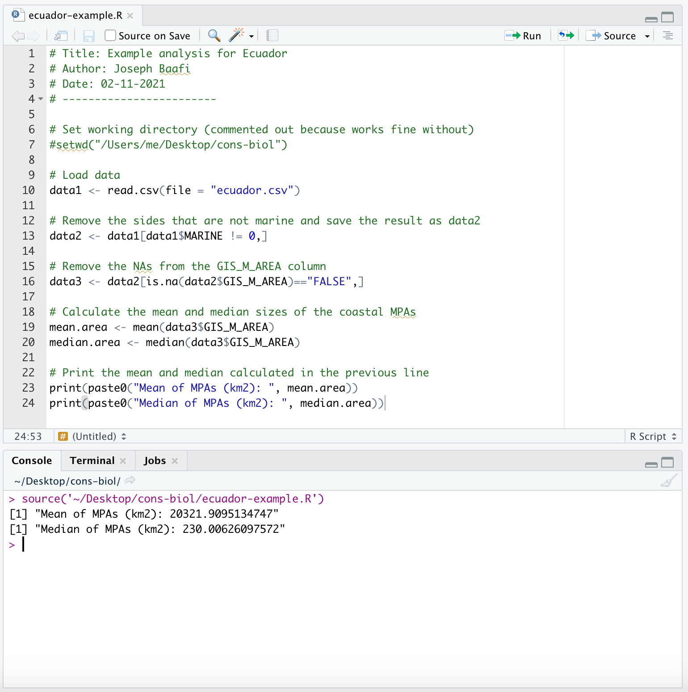
We use the print command so that the mean and median values are printed out when we run our R Script. This is necessary to replicate the analysis that produced our assignment results by running the R Script. You should add the above lines of code to your R Script.
- We would like to calculate the total area that is ‘no take’. Let’s check the appropriate column of the data:
data3$NO_TK_AREA## [1] 0 0 0 0 0 0 0 0 0 0 0 0 0 0 0 0 0 0 0 0In the Ecuador example data this value is always 0 (therefore it is not a good example). However, we can still learn the syntax to take the sum:
area.no.take <- sum(data3$NO_TK_AREA)
print(paste0("No take area (km2): ", area.no.take))## [1] "No take area (km2): 0"You will want to add these lines of code as the next lines of code in your R Script which will look like this:
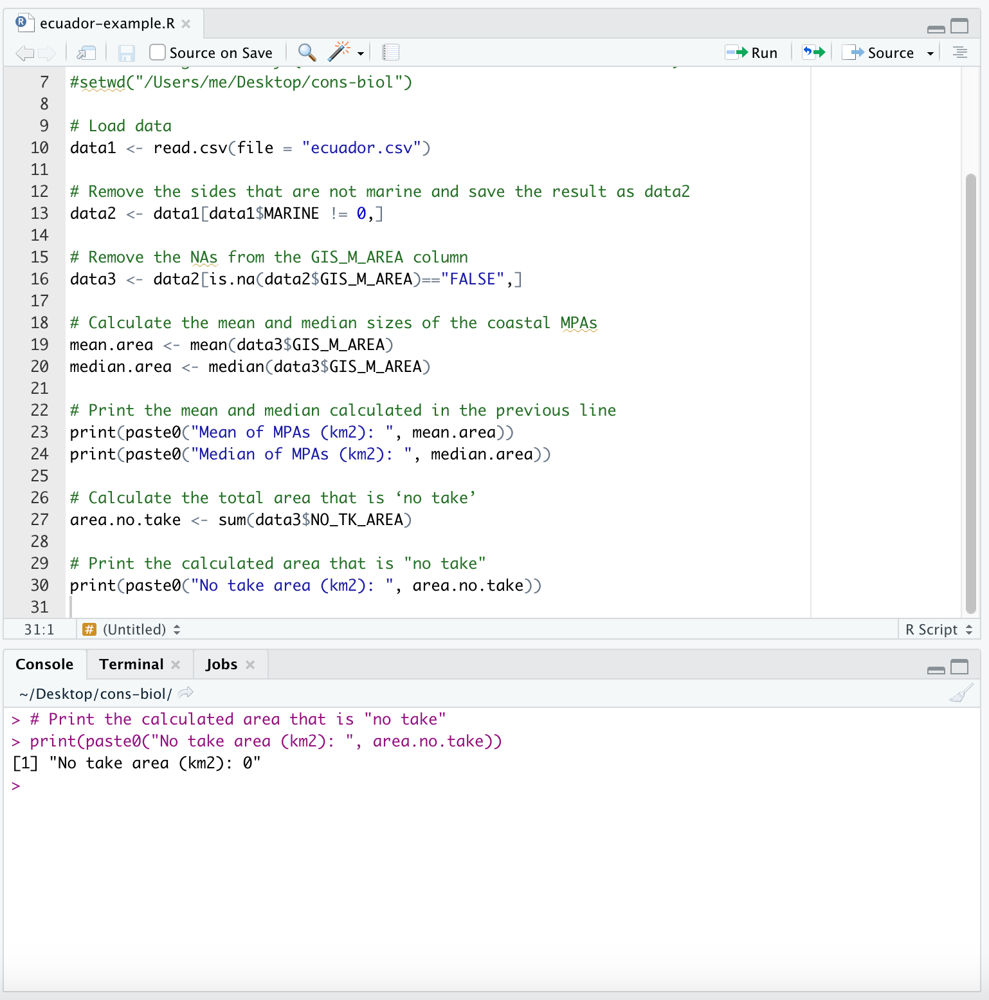
2.2 Preparing the data for graphing
Before we can make the graphs we will need to organize the data we want to graph.
- First, we would like to graph the number of areas in each level of protection. To do this, we will have to group the data according to the level of protection and count the number of areas in each level of protection and saving it as
data4.
data4 <- aggregate(x = data3$GIS_M_AREA,
by = list(data3$IUCN_CAT),
FUN = length)Let’s query the result in our Console to see that this worked:
data4## Group.1 x
## 1 II 8
## 2 III 4
## 3 Not Reported 8If you aggregate() command worked well, you will want to add all that code to your R Script.
- Note that for the original Ecuador data this did not work because all entries in the
IUCN_CATcolumn wereNot ReportedorNot Applicable(ecuador.csvis a supplemented version of the true Ecuador data with someIUCN_CATset toIIandIII). In this example, row 3 isNot Reported. We can remove this row:
data4 <- data4[-3, ] Note that the minus sign indicates to remove, and now data4 has the Not Reported row (both columns) removed. If you have more than one row to be removed, you would use data4 <- data4[-c(3,4,6),] where you want to remove rows 3, 4, and 6. (Note that the comma is needed outside the round bracket to indicate all columns. The rows are specified by c(3,4,6)).
Here data4 appears on both the left- and righthand size of <-, so the old variable data4 (containing row 3) is overwritten with the new variable data4, which has row 3 removed.
- Our data describing the number of areas in each level of protection is now ready as
data4, but let’s clean more data to make another graph before moving on to the graphing section. Your R Script should now look like this:
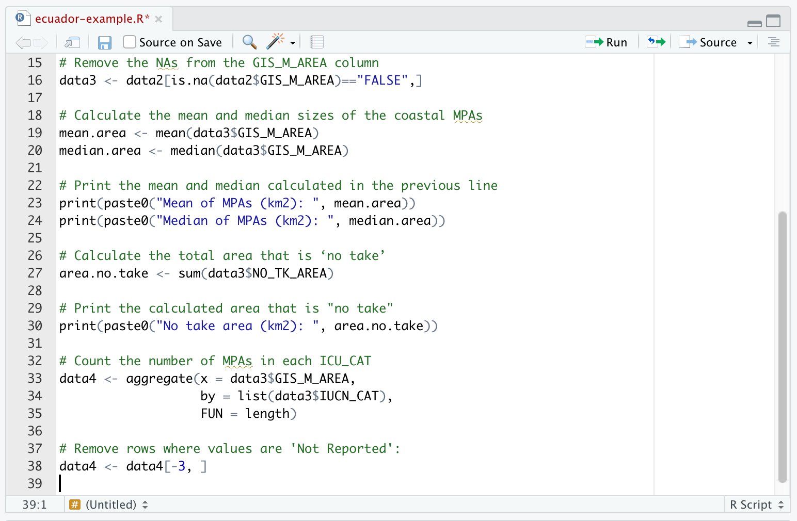
(where the top rows of code weren’t able to fit in the screen shot, but they are the same as before)
- Now we would like to calculate the amount of area that is strongly protected.
We can do this by grouping by the IUCN_CAT column of data3, and summing the area GIS_M_AREA for the MPAs within the group. We name the result data5. Run this command in your R Console:
data5<-aggregate(x = data3$GIS_M_AREA,
by = list(data3$IUCN_CAT),
FUN = sum) We can check the result by typing, in the Console:
data5## Group.1 x
## 1 II 125942.690
## 2 III 277777.465
## 3 Not Reported 2718.036Again, would like to remove the third row:
data5 <- data5[-3,]You should add the lines that generate data5 to your R Script.
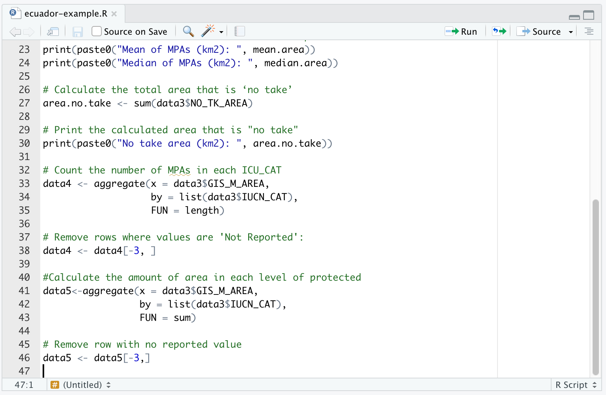
If it is confusing to follow such specific instructions, and you would like to have a more general understanding of the commands, you might read Handling the data.
2.3 Making graphs
In this section we will make graphs of data3, data4 and data5.
- We would like to construct a histogram to graph the size-frequency distribution.
We will construct a histogram without a logarithm scale first, with the function hist(). The data we need to use are data3$GIS_M_AREA which contains the areas of the marine protected areas:
hist(data3$GIS_M_AREA, breaks = 50,
xlab = "Size of MPAs",
ylab="Frequency",
main = "The size-frequency distribution of MPAs") # Histogram without logarithmic axis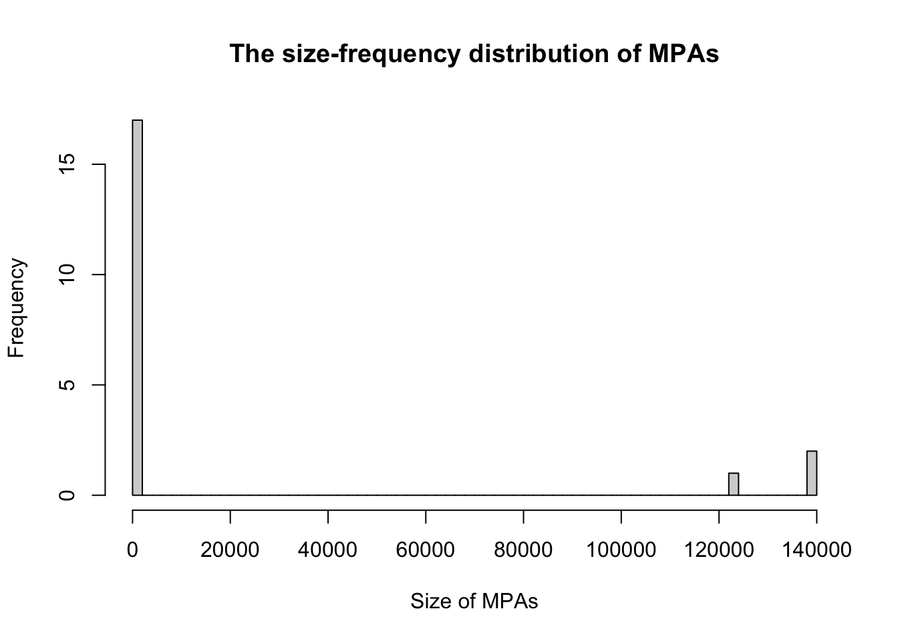
Note that the graph appears in the plot window:
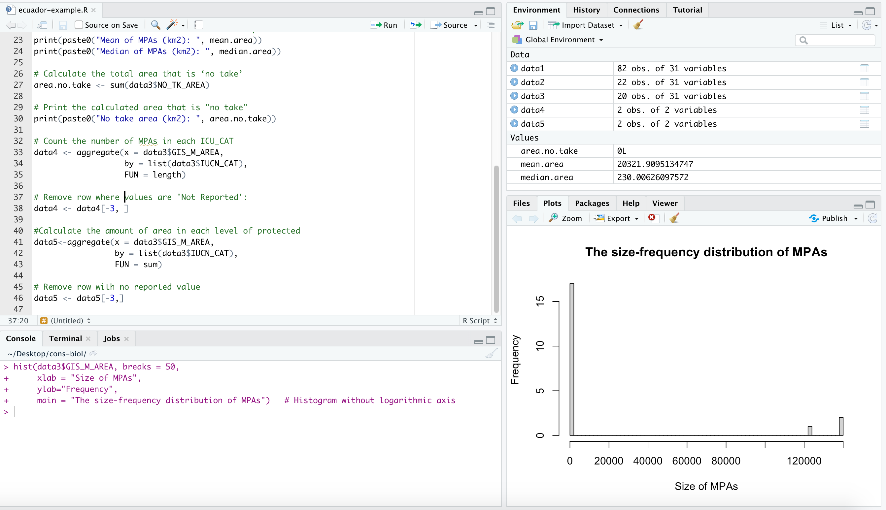
- We can plot these results on a logarithm scale as:
log10.area <- log(data3$GIS_M_AREA,10)
hist(log10.area, breaks = 50, xlab = "x label here", ylab = "y label here", main = "title here") # Histogram with logarithmic axis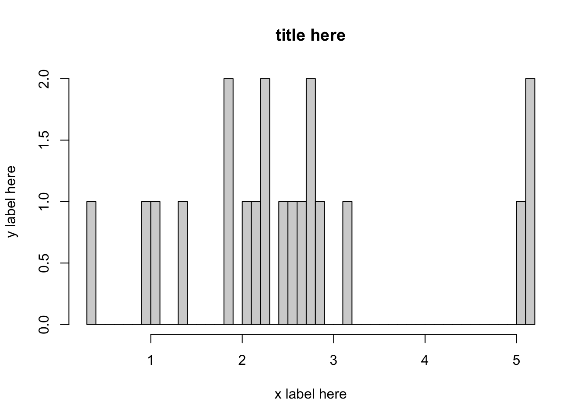
The histogram above has log data on the x-axis. We would like to retain the scale of the log axis (i.e. the distance between the ticks is logarithmic), but we would like to replace the values on the x-ticks with the area (by performing the inverse operation of log(x,10), which is 10^x.). Consider the code below:
log10.area <- log(data3$GIS_M_AREA,10)
old.x.vals = seq(0, 6)
hist(log10.area, breaks = 50, xaxt = "n", xlab = "x label here", ylab = "y label here", main = "title here") # Histogram with logarithmic axis
axis(side = 1, at = old.x.vals, labels = 10^old.x.vals)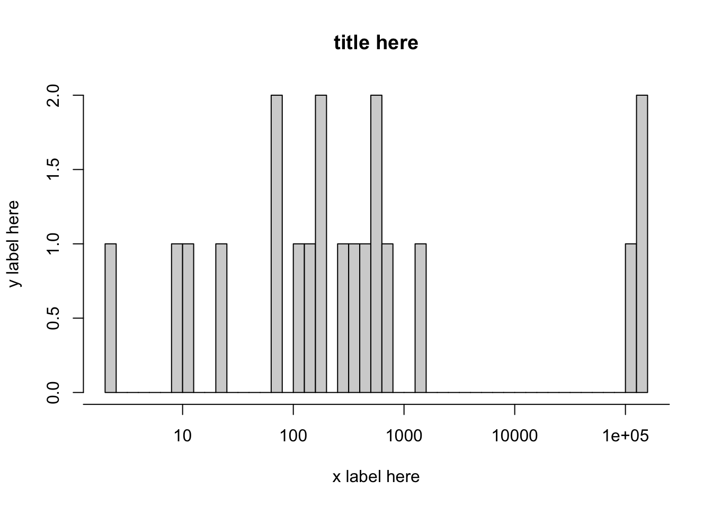
For your data, the old values of the x-axis might fall within a different range, or you might wish to increment by 2. You might wish to edit old.x.vals about to make a better looking graph for your data. If you are scientific notation, i.e. 1e5 and it doesn’t look good, you can add to the beginning of your R script options(scipen=100).
The above command, when you have corrected the title and axis labels, you can add to your R Script.
- We can use a barplot to show the number of areas under each level of protection from the data contained in
data4. Remember thatdata4has two columns:
data4## Group.1 x
## 1 II 8
## 2 III 4The values of interest are in the column named x, which are the numbers associated with each level of protection. We refer to just this column using the command data4$x. The names to go on the x-axis of the barplot are data4$Group.1. Use the following code to make the bar plot and add it to your R Script:
barplot(data4$x,
xlab = "Level of protection",
ylab="Number of areas",
names.arg=data4$Group.1,
las=1,
main="Number of areas for each level of protection")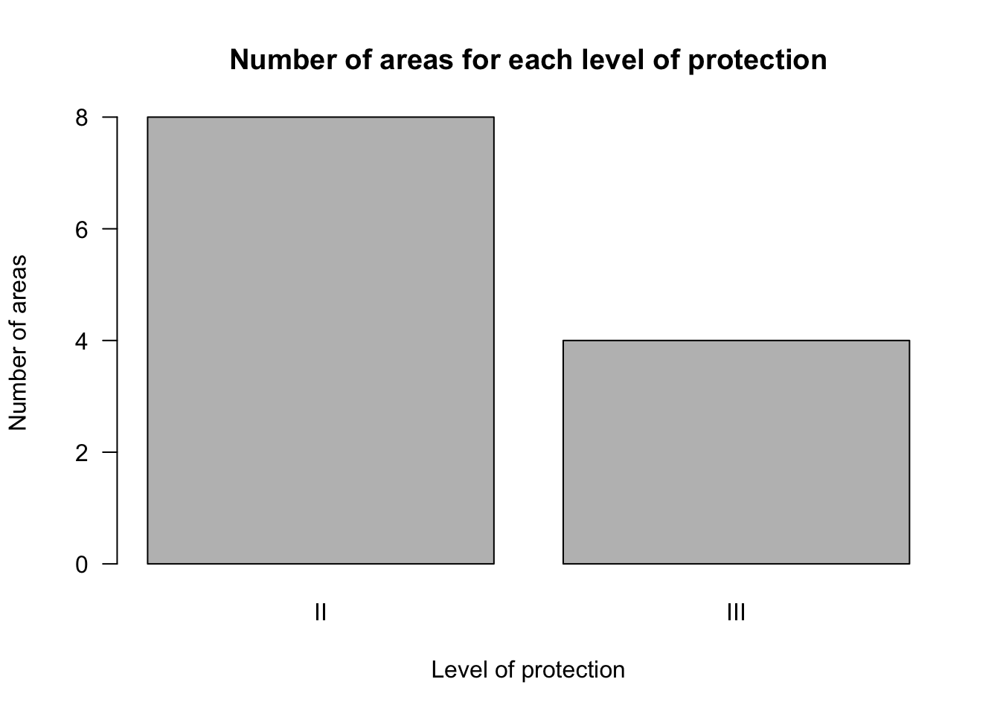
- Let’s revisit the data we saved in
data5. Enter into your Console:
data5## Group.1 x
## 1 II 125942.7
## 2 III 277777.5The column containing the data that we want to use for the barplot is data5$x which is that total area for each category. Add the following to your R Script:
barplot(data5$x,
xlab = "Level of protection",
ylab="Area(Amt. land and water/km^2)",
names.arg=data5$Group.1,
las=3,
main="Area of land and water for each level of protection")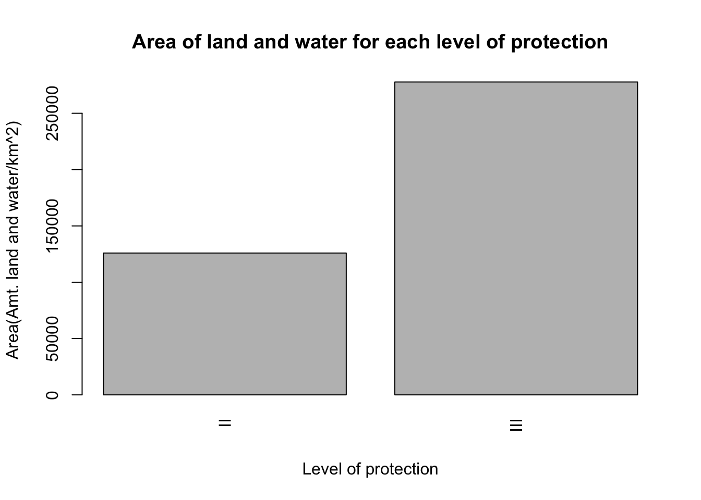
The next lines of your R Script would look like this: 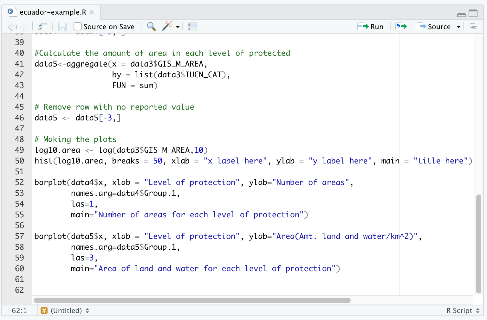
See here for instructions for how to export your graphs.